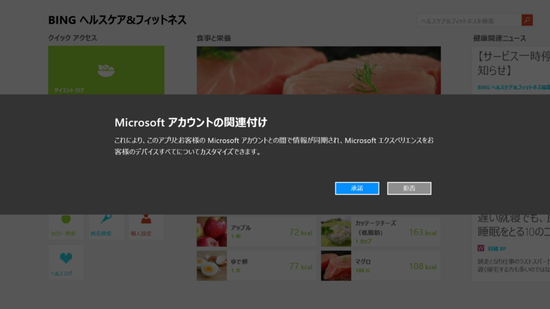

Bing ファイナンス 3.0.2.229、Bing スポーツ 3.0.2.229、Bing フード&レシピ 3.0.2.229、Bing ニュース 3.0.2.229、Bing ヘルスケア&フィットネス 3.0.2.230、Bing トラベル 3.0.2.229、Bing 翻訳 1.7.0.0
公開日：
OneNote16.0.1929.1156、My Time Line 2.1.0.10 - だるろぐ の続き。Bing アプリの一斉アップデートが1週間前にぐらいにあったみたいだね。Windows Phone、iPhone、Android との絡みもあるのかな。よくわかんない。
Along with fresh features, your personalized content from all 7 of the Bing apps will now roam across all your Windows devices (Windows PCs and Tablets running Windows 8.1)
Bing ファイナンス 3.0.1.299 → 3.0.2.229
リリースノートはないみたい。名前が微妙に変わった？ Bing というブランド名が冠されている。
Bing スポーツ 3.0.1.203 → 3.0.2.229
リリースノートなし。


Microsoft アカウントによる同期に対応したようだ。「フード&レシピ」（スクリーンショットは 3.0.1.337）なんかはすでに対応していたように思うけれど。

Bing フード&レシピ 3.0.1.337 → 3.0.2.229

その「フード&レシピ」だが――やはり、リリースノートなし。
Bing ヘルスケア&フィットネス 3.0.1.335 → 3.0.2.230
リリースノートなし。このこだけなぜかリビジョンが違う。

アカウントの関連付け。

前バージョンのスタート画面と比べると若干デザインが違うようだ。
Bing 翻訳 1.6.0.0 → 1.7.0.0

このこを Bing アプリに含めるのはちょっとお門違いな気もするが。
FooEditor 1.8.0.0、LINE 1.0.8.89、Bing 翻訳家 1.5.1.0、Bing ヘルスケア&フィットネス 3.0.1.335 - だるろぐ 以降、1.6.0.0 のリリースを見逃していたようだ（？
おそらくこのアップデートでアプリ名も「Bing 翻訳家」から「Bing 翻訳」になったのだろう。知らんけど。
リリースノートはとくにないみたい。
1.6.0.0 を起動すると、プライバシーポリシーに同意させられる。カメラ翻訳機能で撮影したり、音声翻訳機能で録音したデータは Microsoft へ送信されるとの由。まぁ、そりゃそうだろうな。